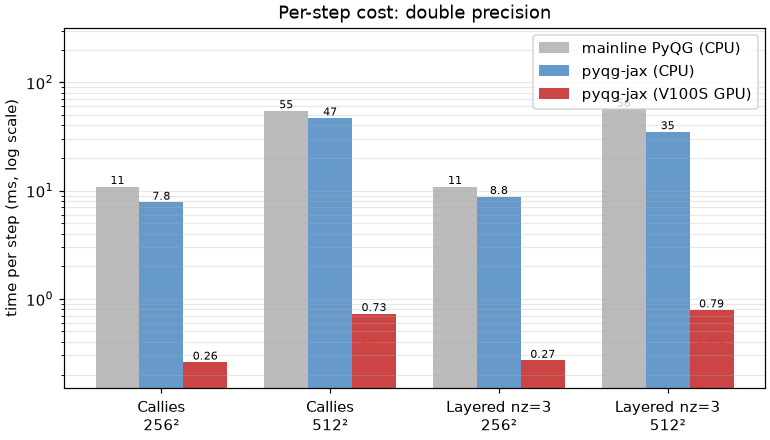
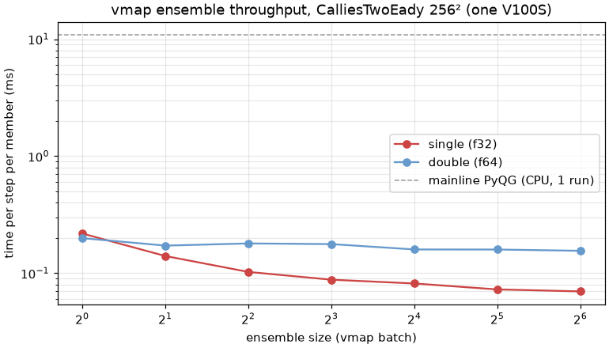

Performance
Because the models in this package are written in JAX, the same code
runs on CPU or GPU and can be batched with jax.vmap(). For the
quasigeostrophic models the per-step cost is dominated by FFTs, which
map very well onto a GPU.
The numbers below were measured on this fork’s development machine
(2× Tesla V100S, JAX 0.10.1, CUDA 12) with the timed call wrapped in
jax.jit() and block_until_ready, excluding compilation. They
are illustrative only and will vary with hardware, grid size, and JAX
version, but the qualitative picture is robust.
Single simulation
Time per step (milliseconds), double precision, comparing mainline PyQG (Cython, CPU) with this package on CPU and on one V100S GPU:
Configuration |
mainline CPU |
JAX CPU |
JAX GPU |
GPU vs mainline |
|---|---|---|---|---|
CalliesTwoEady 256² |
10.9 |
7.8 |
0.26 |
~42× |
CalliesTwoEady 512² |
54.7 |
46.8 |
0.73 |
~75× |
LayeredModel (nz=3) 256² |
10.9 |
8.8 |
0.27 |
~40× |
LayeredModel (nz=3) 512² |
56.5 |
35.0 |
0.79 |
~71× |
{kind=link}

Per-step cost (double precision, log scale). The GPU is roughly 40-75× faster than the mainline Cython kernel.
On CPU, JAX is roughly on par with the Cython kernel; essentially all of the speedup comes from the GPU. At small grids (e.g. 128²) the GPU is latency-bound and the advantage shrinks – batching (below) is what recovers throughput there.
Ensembles with vmap
The largest gains come from running many simulations at once. Mapping
the stepped model over a batch of initial states with jax.vmap()
amortizes kernel-launch overhead across the ensemble. For
CalliesTwoEady at 256² on one V100S:
double precision, batch of 32: 0.16 ms/step per member
single precision, batch of 32: 0.072 ms/step per member
i.e. roughly two orders of magnitude faster per member than the mainline CPU kernel. A 32-member, one-year ensemble at 256² runs in a few minutes on a single GPU. Hundreds of members fit in the memory of a 32 GB card at 512².
{kind=link}

Ensemble throughput. Batching with jax.vmap() drives the per-member
cost down (most strongly in single precision), reaching ~150× faster per
member than a single mainline CPU run (dashed line).
Reproducing these numbers
Enable 64-bit precision (see Installation) and select the platform
with the JAX_PLATFORMS environment variable (cpu or cuda).
A minimal single-model timing loop:
import functools, time, jax
jax.config.update("jax_enable_x64", True)
import pyqg_jax
stepped = pyqg_jax.steppers.SteppedModel(
pyqg_jax.layered_model.LayeredModel(
nx=512, nz=3, f=1e-4,
precision=pyqg_jax.state.Precision.DOUBLE,
),
pyqg_jax.steppers.AB3Stepper(dt=3600.0),
)
state = stepped.create_initial_state(jax.random.key(0))
@functools.partial(jax.jit, static_argnames=["n"])
def roll(s, n):
return jax.lax.scan(
lambda c, _: (stepped.step_model(c), None), s, None, length=n
)[0]
state = roll(state, 100) # compile + warm up
state.state.qh.block_until_ready()
t0 = time.perf_counter()
state = roll(state, 100)
state.state.qh.block_until_ready()
print((time.perf_counter() - t0) / 100 * 1e3, "ms/step")